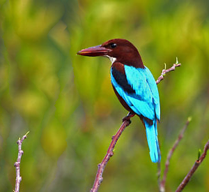
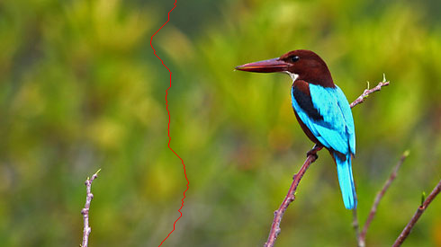
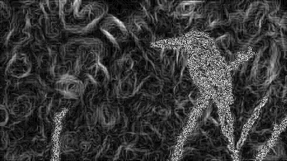
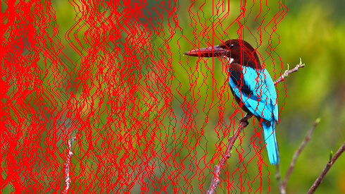

Smart image resizing
Seam carving is an algorithm that performs content-aware image resizing. In other words, it is an algorithm that can resize a photo without altering the important parts of the photo.
Suppose we have the following image with resolution 490 x 275 and we would like to resize it to 300 x 275
Result from Adobe Photoshop's image resize, everything is squished since aspect ratio is not preserved.
Result from Adobe Photoshop's canvas crop, the bird is nearly cut off and some branches are missing.
Result from seam carving, the important entities in the photo are preserved.
Seam carving, as the name suggests, does its job by removing seams from images. A seam is simply a group of connected pixels spanning from one end of an image to the other end. A vertical seam spans from the top of the image to the bottom and can only contain one pixel per row, a horizontal seam spans from left to right and can only contain one pixel per column.
Below is an example of a vertical seam (highlighted in red).
The algorithm removes one seam at a time until the desired resolution is achieved and it will always remove the seam with the lowest energy. We define the energy of a pixel as the gradient magnitude of the pixel and the energy of a seam as the sum of the energy from each pixel in the seam. In simpler terms, the energy of a pixel is defined as the amount of color variation between the pixel and its 8 surrounding pixels.
The intuition behind removing the seam with lowest energy is that by doing so, we remove pixels that have very small changes in color intensity when compared to its neighbours. Therefore, we remove pixels that don't give us any important information (since the neighbouring pixels share very similar colors and can tell us the same thing).
The gradient magnitude is shown below. White pixels indicate high color variation whereas black pixels indicate low color variation. We can see that a seam crossing the bird or a branch will have higher energy than a seam crossing only the background because there are more white pixels in the bird and branches than there are in the background.
This image shows the seams that were cut to resize our image.
